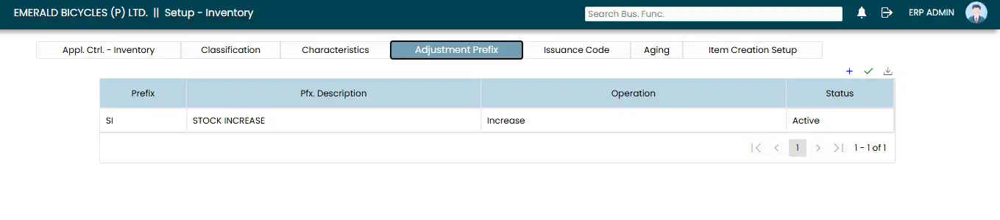

<div data-category="Inventory Control" data-title="Adjustment Prefix" data-updated="January 27, 2026" data-contributors="RoadmapIT" data-breadcrumb="Home,Inventory Control,Adjustment Prefix">
  <div class="page-content">
    <p>A prefix is a code or a label that is added to the beginning of an inventory item number or a document number to identify or classify it. User can use this screen to define the Prefixes for stock adjustment. User can also create the prefix for opening balance here. User cannot change or delete a Prefix if it has any transactions linked to it. However, user can edit the descriptions of the Prefixes as needed.</p>
    <h5>Navigation path:</h5>
    <p class="fs-6">Supply Chain Management \ Inventory \ Setup \ Setup - Inventory</p>
    
    <ul style="list-style-type: none; align-content: center">
      <li class="mouse-icon">Enter Prefix.</li>
      <li class="mouse-icon">Enter Description.</li>
      <li class="mouse-icon">Select Operation from list.</li>
      <li class="mouse-icon">Select Status ‘Active’ from list so as to activate the prefix</li>
      <li class="mouse-icon">
        Click
        <i class="bi bi-check-lg fs-4 mx-1 text-success"></i>
        to save the prefix.
      </li>
    </ul>
  </div>
</div>
